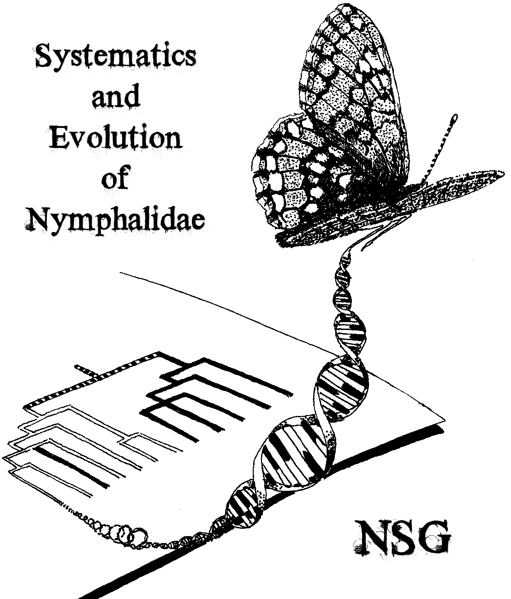

The Nymphalidae Systematics Group studies the phylogenetic relationships of taxa in the butterfly family Nymphalidae, using mainly molecular methods. We are interested in where, when and how the major groups of nymphalids have diverged from each other.
The Nymphalidae Systematics Group is organizing the 7th International Conference on the Biology of Butterflies! The conference will be held in Turku, Finland in August 2014, check back regularly for updates.
Contact information:
|
Niklas Wahlberg Laboratory of Genetics Department of Biology University of Turku 20014 Turku Finland Phone +358 2 333 5569 Fax +358 2 333 6680 E-mail: |
|